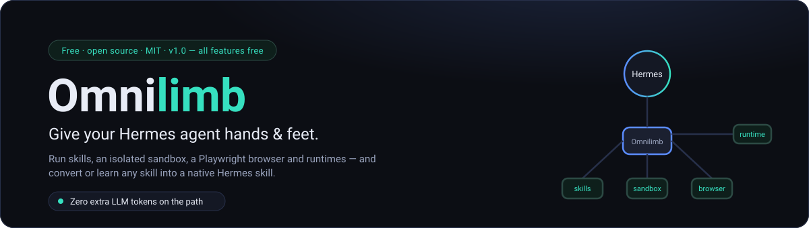
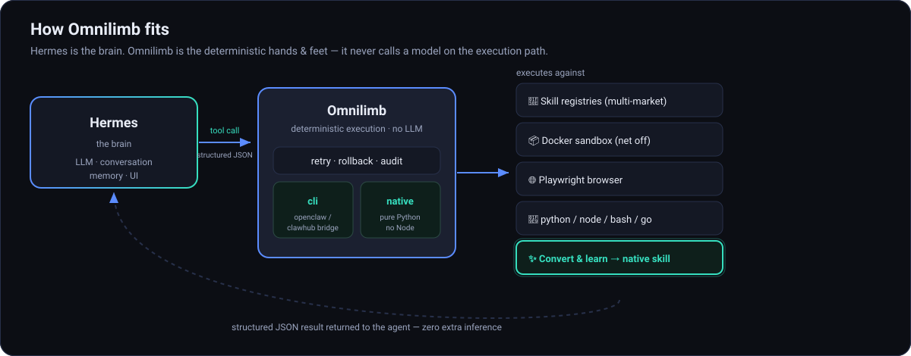
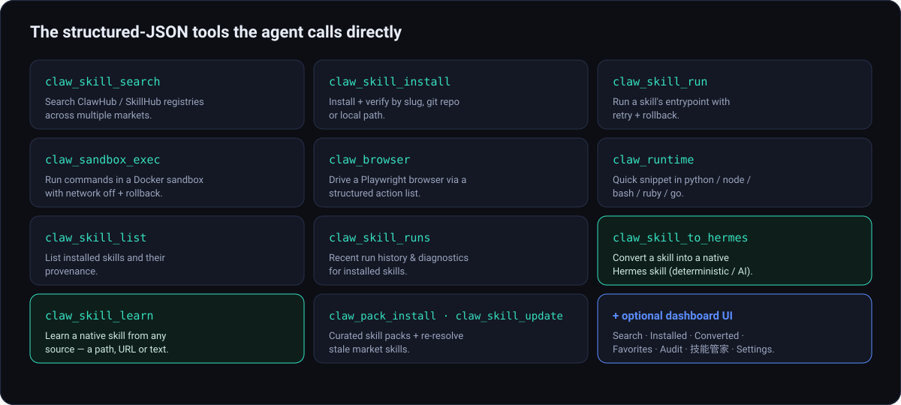
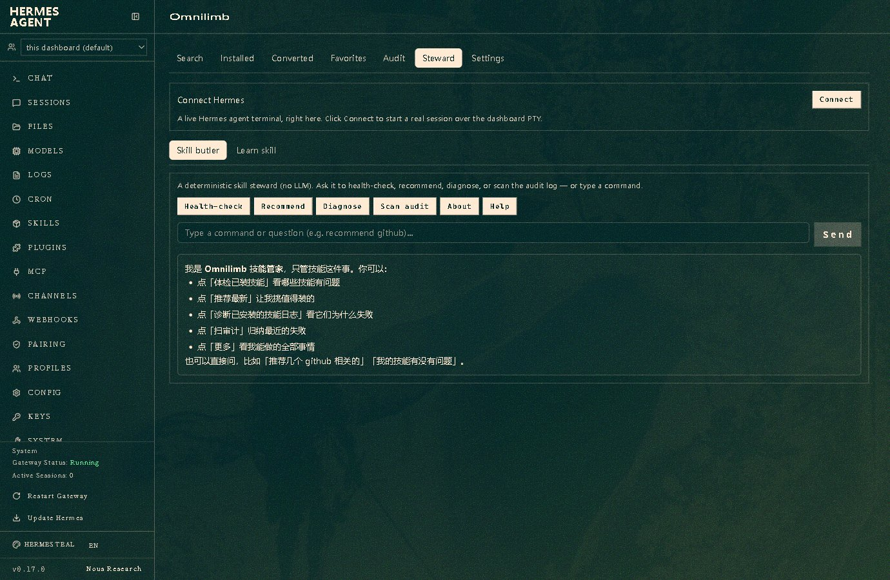
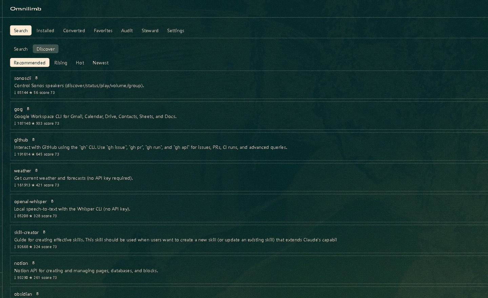
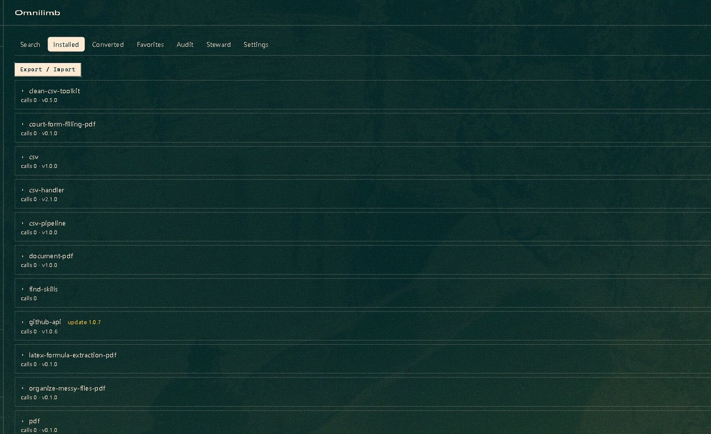
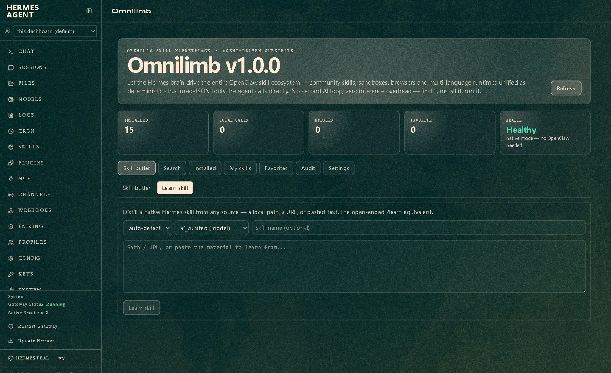

Let your Hermes agent actually get things done — community skills, an isolated sandbox, a browser and multi-language runtimes, all as deterministic tools.
pip install omnilimb
Built for the latest Hermes Agent (v0.17.0): you keep the brain, Omnilimb is the hands & feet. On the execution path it never calls a model itself — it just does the deterministic, reproducible work. Compatible with OpenClaw & ClawHub; not affiliated with them.

No second model call on the execution path — cheaper, faster, reproducible.
Retry, rollback and an audit log; the sandbox runs with the network off by default.
Turn any skill into a native Hermes skill — or learn a new one from a single sentence.
The same task, without a second model call: Omnilimb executes deterministically — same result, very different token bill.
A small set of structured-JSON tools your agent can call directly.
Search the ClawHub / SkillHub registries and install skills by slug, git repo, or local path — with verification.
Execute a skill's script entrypoint with retry and rollback — no second AI loop, no inference overhead.
Browse leaderboards across markets and run a per-skill health check (体检) before you install.
List, view/edit, smoke-test, import/export and uninstall installed skills.
Bridge to the real openclaw / clawhub CLIs, or run a fully decoupled native Python substrate — no Node needed.
Run untrusted commands in a Docker sandbox with the network off by default and instant rollback.
Drive a Playwright browser through a structured action list.
Run quick snippets in python / node / bash / ruby / go.
An optional local JSONL audit log of tool calls you can view in the dashboard.
Distill a native Hermes skill from any source — a local path, a URL, or pasted text — validated and written to your Hermes skills.
learn <url>学习 XXXXA deterministic, no-LLM butler that health-checks, recommends and diagnoses your skills — with Learn built in.
Turn an installed market skill into a native Hermes skill — deterministic or AI-curated, behind a structural validation loop.

Real screenshots from the Omnilimb dashboard tab.




Install the plugin into your Hermes home and enable it.
As a pip package:
pip install omnilimb hermes plugins enable omnilimb
Or as a directory plugin:
cp -r omnilimb ~/.hermes/plugins/omnilimb hermes plugins enable omnilimb